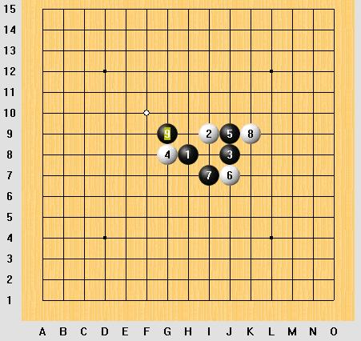

问几个连珠必胜的问题。如果黑棋有错招,请指正.
#1 问几个连珠必胜的问题。如果黑棋有错招,请指正. 作者：sheal 发表时间：2007-6-23 13:26:51
问题一：新水一打，白8强防，请问黑9放于何处可胜？
#2 Re:问几个连珠必胜的问题。 作者：sheal 发表时间：2007-6-23 13:30:16
问题二：新水一打白6，黑7，白8后，黑9是I8连三，还是K8跳三可必胜？还是需要换个黑7？
#3 Re:问几个连珠必胜的问题。 作者：sheal 发表时间：2007-6-23 13:32:51
问题三：恒金互通二打，通新月二打，这个形状后，白16于A，B都是强防，黑可以必胜么？还是黑棋前面的招数需要更换？
#4 Re:问几个连珠必胜的问题。 作者：sheal 发表时间：2007-6-23 13:35:46
问题四：瑞星恒星互通二打，这个黑11能必胜么？
#5 Re:问几个连珠必胜的问题。 作者：sheal 发表时间：2007-6-23 13:37:35
问题五：瑞星恒星互通二打，这个黑9据说能必胜，请问白棋防上方，黑11下哪里？白棋防下方黑棋又下哪里？

#6 Re:问几个连珠必胜的问题。 作者：sheal 发表时间：2007-6-23 13:41:03
问题六：恒星金星互通，或者称寒星二打的一个变化，这个白8下面除了这个白18的变化我必胜不了，其他的给寒星留盘端也能必胜，请问这个白18怎么必胜？或者从哪里开始需要换黑棋的下法？

#7 Re:问几个连珠必胜的问题。 作者：sheal 发表时间：2007-6-23 13:42:05
问连珠必胜的问题，也不知道发到哪里好，只好先发来这里了。#8 Re:问几个连珠必胜的问题。 作者：屏蔽 发表时间：2007-6-23 14:17:15
一、感觉上向左下发展的样子，因为定式上8－I8后黑棋是在右上取胜。一时说不好。但是白棋没有任何手段，黑棋可以自由做棋。考虑G6或H5？
二、跳三，上止，常见必胜形。
三、感觉上白8弱，但是黑9绝对不好！白10后黑损失优势。黑9起在下边进攻会比较好，毕竟白棋上边一时也没有好的反击手段。
四、没算，感觉上线路比较狭窄的样子，困难。黑9在右边抢攻会不会好一些？
五、黑9在这种情况下脱谱，感觉不好，似乎黑棋走哪里都难局。
六、黑13还要在H6拓展一下。以下变化非常复杂，最终结论是黑胜，但我没有仔细看过有没有盘端问题。书现在不太方便拿，就是李洪斌的那本寒星必胜，有的话你可以参考一下。
七、感觉上发到『 五子研究 』？
#9 Re:问几个连珠必胜的问题。 作者：sheal 发表时间：2007-6-23 15:20:45
书我有的..书里的胜法有一些都是有盘端问题的.hoho.
那我改发到五子研究里去.hoho
那边需要审查.偶这个不大算是研究...汗
下面这个图的黑15放哪里可以必胜哦?

#10 Re:问几个连珠必胜的问题。如果黑棋有错招,请指正. 作者：屏蔽 发表时间：2007-6-23 16:19:48
通常是K10做杀
本人水平有限，不负任何责任，嘿嘿嘿～
#11 Re:问几个连珠必胜的问题。如果黑棋有错招,请指正. 作者：无尽 发表时间：2007-6-23 18:56:41
恩，9楼K10能杀#12 Re:问几个连珠必胜的问题。如果黑棋有错招,请指正. 作者：无尽 发表时间：2007-6-23 19:14:11
1楼9-i6能杀#13 Re:问几个连珠必胜的问题。如果黑棋有错招,请指正. 作者：无尽 发表时间：2007-6-23 19:15:35
6楼11-15能杀，我更喜欢这个。你的图的杀法印象在某些通型中会有盘端问题。#14 Re:问几个连珠必胜的问题。如果黑棋有错招,请指正. 作者：无尽 发表时间：2007-6-23 19:21:10
4楼11-K8#15 Re:问几个连珠必胜的问题。如果黑棋有错招,请指正. 作者：无尽 发表时间：2007-6-23 19:22:40
5楼11-H5,12-i6最强，13-i5（要点，12多个强防13都走这点）#16 Re:问几个连珠必胜的问题。如果黑棋有错招,请指正. 作者：无尽 发表时间：2007-6-23 19:28:47
3楼9直接盖白眠三就可以了吧
#17 Re:Re:问几个连珠必胜的问题。如果黑棋有错招,请指正. 作者：sheal 发表时间：2007-6-24 12:45:14
引用：
原文由 无尽 发表于 2007-6-23 19:22:40 :
5楼11-H5,12-i6最强，13-i5（要点，12多个强防13都走这点）
白10反向防守,黑11哪里比较好.
#18 Re:Re:问几个连珠必胜的问题。如果黑棋有错招,请指正. 作者：sheal 发表时间：2007-6-24 12:59:10
引用：
原文由 无尽 发表于 2007-6-23 19:14:11 :
1楼9-i6能杀
9-i6,这个白10后.黑11哪里好呢?
白10左移一格,11又下哪里好?
#19 Re:Re:问几个连珠必胜的问题。如果黑棋有错招,请指正. 作者：sheal 发表时间：2007-6-24 13:06:14
引用：
原文由 无尽 发表于 2007-6-23 18:56:41 :
恩，9楼K10能杀
16=J10挡住眠三,唯一防,否则黑棋追胜.黑17下哪里?
把这个白6解决了,金星通恒星的这个二打,我就终结了.其他的白6基本用黑石搞定了.
我手上有个花浦水金的谱,里面黑15是下在往上一格的,那里面黑棋进攻到后面,白棋有反VCF,黑棋就无法进攻,也就胜不了.
#20 Re:Re:问几个连珠必胜的问题。如果黑棋有错招,请指正. 作者：sheal 发表时间：2007-6-24 13:31:17
引用：
原文由 无尽 发表于 2007-6-23 19:15:35 :
6楼11-15能杀，我更喜欢这个。你的图的杀法印象在某些通型中会有盘端问题。
刚才重新计算了下,下面的11,13可胜,其他白12黑可VCT.
#21 Re:Re:问几个连珠必胜的问题。如果黑棋有错招,请指正. 作者：sheal 发表时间：2007-6-24 13:36:44
引用：
原文由 无尽 发表于 2007-6-23 19:28:47 :3楼9直接盖白眠三就可以了吧
刚才复查了一遍,是可以胜的.以前没仔细算.
#22 Re:问几个连珠必胜的问题。如果黑棋有错招,请指正. 作者：无尽 发表时间：2007-6-24 13:59:28
17楼 11-H10
18楼 直接K8活三，13下挡
#23 Re:问几个连珠必胜的问题。如果黑棋有错招,请指正. 作者：无尽 发表时间：2007-6-24 14:11:11
20楼，这个11在寒星4-i10的时候12防眠三中间好像会有盘端问题。我原来说的那个都没有盘端问题。#24 Re:问几个连珠必胜的问题。如果黑棋有错招,请指正. 作者：无尽 发表时间：2007-6-24 14:20:29
#25 Re:问几个连珠必胜的问题。如果黑棋有错招,请指正. 作者：longfx 发表时间：2007-6-30 19:21:24
 无尽~~
无尽~~